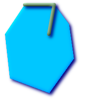
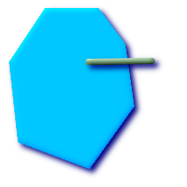

名前
ST_Contains — BのポイントがAの外部に無く，かつBの内部の少なくとも一つの点がAの内部にある場合であって，かつこの場合に限って，TRUEを返します．
概要
boolean ST_Contains(geometry
geomA, geometry
geomB);
説明
BのポイントがAの外部に無く，かつBの内部の少なくとも一つの点がAの内部にある場合であって，かつこの場合に限って，TRUEを返します．この定義の重要で微妙なところは，Aはその境界を含まず，Aは自身を含む，ということです． ジオメトリAが自身を正しく含むかどうかを見るST_ContainsProperlyと対照的です．
ジオメトリBが完全にジオメトリAの内側になる場合はTRUEを返します．この関数が意味のあるものにするためには，元のジオメトリは同じ投影座標である，同じSRIDを持っている必要があります．ST_ContainsはST_Withinの逆のものです．ST_Contains(A,B)はST_Within(B,A)を意味します．ただし，結果が常にFALSEになる，気にしないまたは定義されていない不正なジオメトリの場合を除きます．
GEOSモジュールで実現しています．
![[重要項目]](images/important.png) | |
|
| |
この関数を不正なジオメトリで呼ばないでください．予期しない結果が返されます． |
この関数は，ジオメトリ上で使用可能なインデクスを使うバウンディングボックス比較を自動的に取り込みます． インデクスの使用を避けるには，_ST_Contains関数を使います．
ご注意: これは論理値を返して整数を返さないのが「許される」版です．
 このメソッドは OpenGIS Simple Features Implementation Specification for SQL 1.1.を実装するものです． s2.1.1.2 // s2.1.13.3
- same as within(geometry B, geometry A)
このメソッドは OpenGIS Simple Features Implementation Specification for SQL 1.1.を実装するものです． s2.1.1.2 // s2.1.13.3
- same as within(geometry B, geometry A)
このメソッドはSQL/MM仕様の実装です． SQL-MM 3: 5.1.31
直感的に分かりにくいST_ContainsとST_Withinの微妙な違いがあります．詳細については，Subtleties of OGC Covers, Contains, Withinをご覧ください．
例
次に示す図全てで，ST_ContainsはTRUEを返します．
| 
|

| 
|
次に示す図全てで，ST_ContainsはFALSEを返します．

| 
|
-- 円の中にある円
SELECT ST_Contains(smallc, bigc) As smallcontainsbig,
ST_Contains(bigc,smallc) As bigcontainssmall,
ST_Contains(bigc, ST_Union(smallc, bigc)) as bigcontainsunion,
ST_Equals(bigc, ST_Union(smallc, bigc)) as bigisunion,
ST_Covers(bigc, ST_ExteriorRing(bigc)) As bigcoversexterior,
ST_Contains(bigc, ST_ExteriorRing(bigc)) As bigcontainsexterior
FROM (SELECT ST_Buffer(ST_GeomFromText('POINT(1 2)'), 10) As smallc,
ST_Buffer(ST_GeomFromText('POINT(1 2)'), 20) As bigc) As foo;
-- Result
smallcontainsbig | bigcontainssmall | bigcontainsunion | bigisunion | bigcoversexterior | bigcontainsexterior
------------------+------------------+------------------+------------+-------------------+---------------------
f | t | t | t | t | f
-- ST_ContainsとST_ContainsPropertyとの違いのデモ
SELECT ST_GeometryType(geomA) As geomtype, ST_Contains(geomA,geomA) AS acontainsa, ST_ContainsProperly(geomA, geomA) AS acontainspropa,
ST_Contains(geomA, ST_Boundary(geomA)) As acontainsba, ST_ContainsProperly(geomA, ST_Boundary(geomA)) As acontainspropba
FROM (VALUES ( ST_Buffer(ST_Point(1,1), 5,1) ),
( ST_MakeLine(ST_Point(1,1), ST_Point(-1,-1) ) ),
( ST_Point(1,1) )
) As foo(geomA);
geomtype | acontainsa | acontainspropa | acontainsba | acontainspropba
--------------+------------+----------------+-------------+-----------------
ST_Polygon | t | f | f | f
ST_LineString | t | f | f | f
ST_Point | t | t | f | f